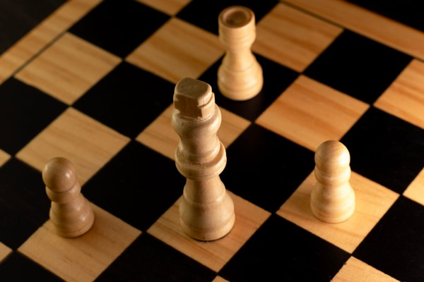

Noble Raven Our Story
A Place at the Table.

Built for the person asking, “How does this piece move?”
Noble Raven began as an imagined answer to an awkward first game: someone hands you a board and assumes you already know what to do. Our kits slow that moment down with clear piece guides, simple starting exercises, and room to ask questions.
Neelesh Reddi chose the raven for its curious, observant character and the word noble for the way we want people to treat one another across a board. We care about patient explanations, good sportsmanship, and the small discoveries that make a second game more inviting than the first.
Our House Rules
- Explain the move when someone asks.
- Give new players time to think.
- Finish each game with one thing you learned.